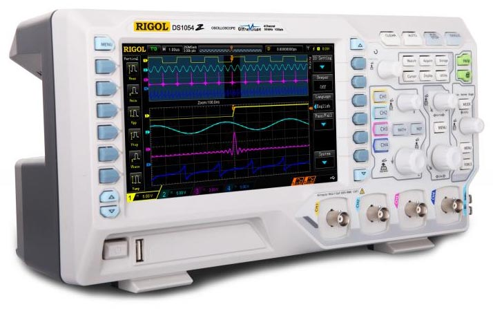

Количество каналов - 4 канала
Полоса пропускания - 50 МГц (опция 100 МГЦ)
Частота дискретизации - 1 Гвыб/с (500 Мвыб/с на 2 канала, 250 Мвыб/с - 3,4 канала)
Глубина записи - 12М (опция 24 М)
Входной импеданс: 1 МОм
Скорость захвата 30000 осц/сек
Расширенная синхронизация, в т.ч. протоколы I²C, RS232, SPI
Интерполятор: линейный, Sin(x)/x
Регистратор на 5000 кадров
Тестирование в пределах Pass/Fail
Выход синхронизации
Интерфейсы: USB-host, USB-device, LAN
Дисплей: 7" (17,8 см), цветной, TFT, 800 х 480
Размеры: 313,1 x 160,8 x 122,4 мм
Вес: 3,2 кг